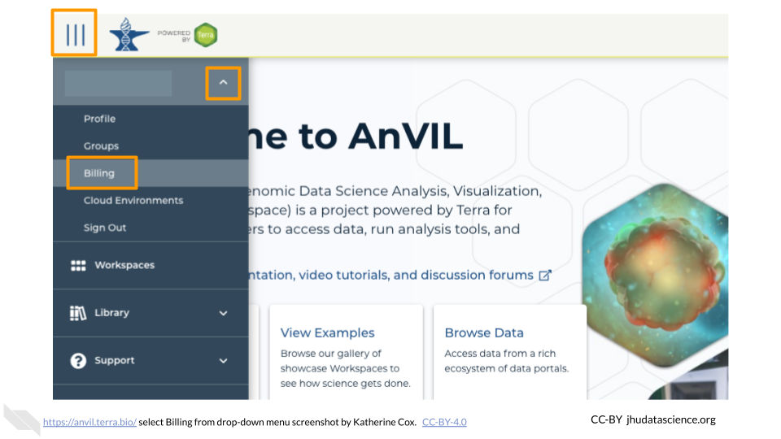

Chapter 11 Set Up Funding
Depending on how you are being funded, this may be taken care of for you. If your funding is being managed by a third party (e.g. through a funding mechanism such as STRIDES, or through your institution), contact them to determine whether you should create a Terra Billing Project for your students.
Regardless of who is managing funding, it is essential to make sure that you have permission to create enough Workspaces for all of your students!
To prevent abuse, new users are only permitted to create a few Workspaces. See Request Quota Increase for more information about how to make sure your students will be able to create Workspaces.
11.1 Create Student Billing Project
As a reminder, Terra Billing Projects are how you grant people, including your students, permission to compute on AnVIL. By adding someone to your Billing Project, you enable them to use your funding to carry out activities on AnVIL.
You can just add students to the same Billing Project that you are using yourself, but we generally recommend creating a separate Billing Project to fund student activity. This makes it easy to deactivate when the course is over, without freezing your own projects.
Note: Terra Billing Projects need unique names. One option is to use a combination of institution-class-role-term (e.g. jhu-bio101-students-2023FA).
To create a Terra Billing Project:
Launch Terra and sign in with your Google account. If this is your first time logging in to Terra, you will need to accept the Terms of Service.
In the drop-down menu on the left, navigate to “Billing”. Click the triple bar in the top left corner to access the menu. Click the arrow next to your name to expand the menu, then click “Billing”. You can also navigate there directly with this link: https://anvil.terra.bio/#billing

On the Billing page, click the “+ CREATE” button to create a new Billing Project. Select GCP Billing Project (Google’s Platform). If prompted, select the Google account to use and give Terra permission to manage Google Cloud Platform billing accounts.

Enter a unique name for your Terra Billing Project and select the appropriate Google Billing Account. The name of the Terra Billing Project must:
- Only contain lowercase letters, numbers and hyphens
- Start with a lowercase letter
- Not end with a hyphen
- Be between 6 and 30 characters

Select the Google Billing Account to use. All activities conducted under your new Terra Billing Project will charge to this Google Billing Account. If prompted, give Terra permission to manage Google Cloud Platform billing accounts.

Click “Create”.

Your new Billing Project should now show up in the list of Billing Projects Owned by You. You can add additional members or can modify or deactivate the Billing Project at any time by clicking on its name in this list.

The page doesn’t always update as soon as the Billing Project is created. If it’s been a couple of minutes and you don’t see a change, try refreshing the page.
Reminder: It’s often a good idea to add at least one other Owner of a Billing Project in order to avoid getting locked out, in case the original owner loses access to their account. See the section on adding instructors to a billing project if you need a reminder on how to do this.
11.2 Request Project Quota Increase
To prevent abuse, new users are only permitted to create a few Workspaces. If each of your students needs their own Workspace (e.g. they each clone their own copy of a Workspace), you will quickly run into this limit and students will not be able to clone or create new Workspaces.
This limit is imposed by Google, rather than Terra (Google only permits you to create a few Google Cloud “Projects”, and each Terra Workspace is a Google Cloud Project), so you will need to contact Google directly to request a “billing quota increase”, using this form. This should be done by the owner of the Google Billing Account. If you set up billing yourself, this is you; otherwise talk to your funding provider and make sure that you have enough Google Cloud Projects available for all your students (typically one per student, unless students need multiple Workspaces).
At the time of writing (Feb 2023) Terra is working to expedite this process for Terra users; we recommend checking the relevant Terra documentation for the latest information as well as recommendations about how to fill out the form.
In our experience, the process has been reasonably straightforward and quick (approved in a couple of days).